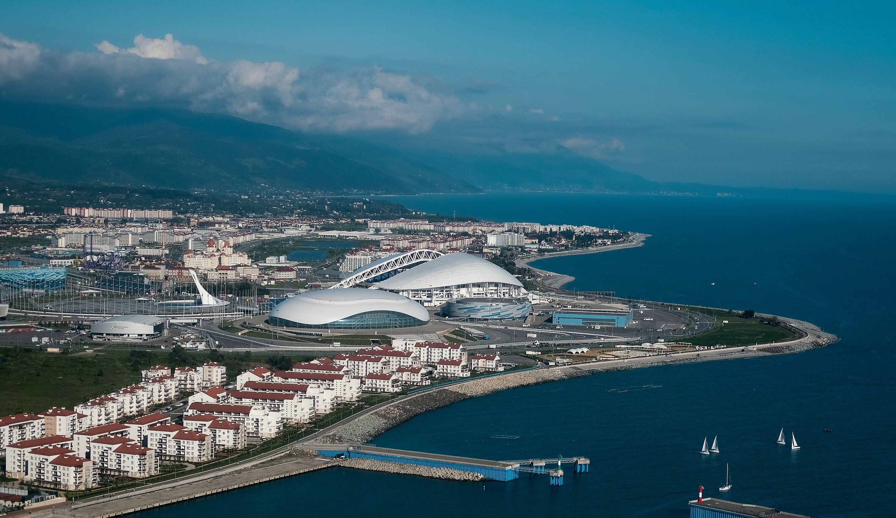
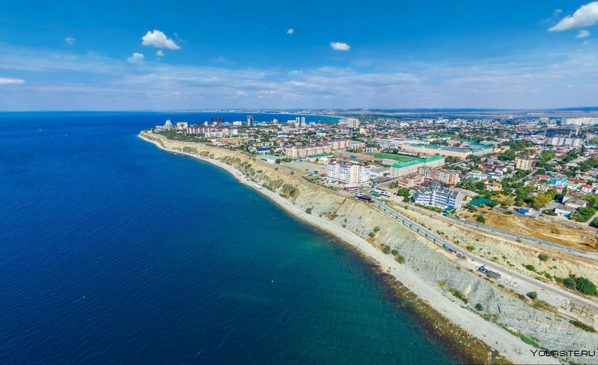
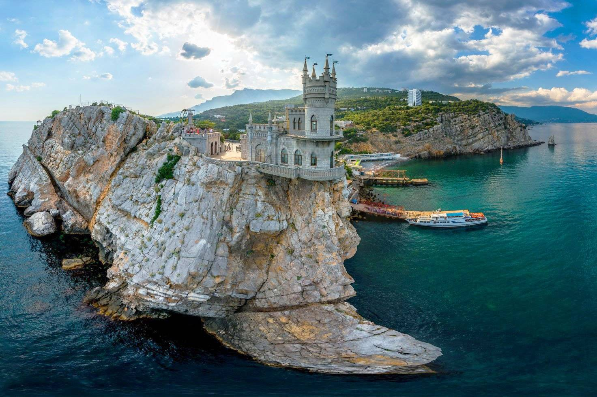

Сочи
Крупнейший курортный город России и важный транспортный узел, а также крупный экономический и культурный центр черноморского побережья России. Неофициально именуется также летней, южной и курортной «столицей» России. В 2012 году журнал Forbes признал Сочи лучшим городом для ведения бизнеса в стране. В 2007 году Сочи был избран столицей XXII зимних Олимпийских игр.
Анапа
Город-курорт на юге России, в Краснодарском крае. Является климатическим и бальнеологическим курортом (преимущественно детско-подростковым). Город краевого подчинения и административный центр муниципального образования «Город-курорт Анапа
Крым
полуостров, омываемый водами Черного и Азовского моря, популярный центр пляжного и активного отдыха. С марта 2014 года расположенные на полуострове Республика Крым и город Севастополь в результате референдума вышли из состава Украины и стали субъектами Российской Федерации. Ситуация с международным признанием перехода остается сложной, тем не менее, сезонные туристические поездки для россиян, теперь уже внутренние, по-прежнему актуальны. Путешественников привлекает возможность отдохнуть в частном секторе по минимальным ценам или остановиться в малолюдных точках Крыма в палатках. Чтобы поток туристов не иссякал, отдых во многих здравницах финансируется из бюджетных источников.